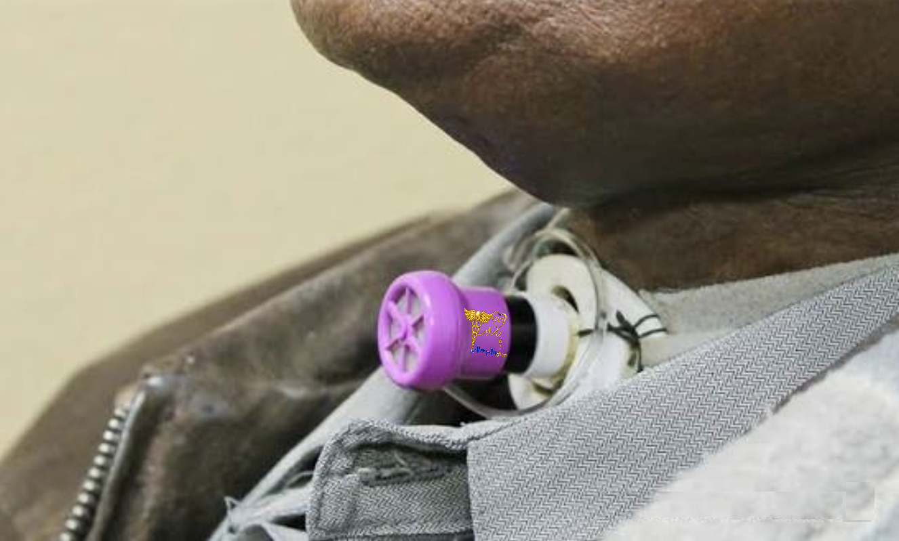

Speaking Valve: Not Just for Speaking
Improving communication, swallowing, and quality of life with tracheostomy
WHAT IS A SPEAKING VALVE?
- One-way valve placed on a tracheostomy tube
- Allows air IN through the trach
- Forces air OUT through the mouth and nose
- Restores more normal airflow pattern
- Common example: Passy-Muir valve
WHEN CAN IT BE USED?
- Patient is awake and able to tolerate it
- Cuff is completely deflated (if present)
- Airway is patent
- Secretions are manageable
- Ability to exhale through upper airway
BENEFITS
- Allows speech and communication
- Improves swallowing and reduces aspiration risk
- Restores positive airway pressure
- Improves cough effectiveness
- Enhances smell and taste
MENTAL & DEVELOPMENTAL IMPACT
- Reduces anxiety and frustration
- Encourages communication with family
- Improves motivation and recovery
- Critical for speech development in children
- Supports emotional connection
TRACH TYPE & SETUP
- Best with cuffless tracheostomy tubes
- Fenestrated tubes improve airflow
- If cuffed → MUST be fully deflated
- Air must flow around the tube
USE WITH VENTILATOR
- Can be used with ventilators
- Requires trained adjustment
- Monitor volumes and alarms
- Air leak is expected
⚠️ WHEN NOT TO USE
REMOVE IMMEDIATELY
- Cuff is inflated (NEVER use in this case)
- Severe shortness of breath or distress
- Excessive, thick or unmanageable secretions
- Weak or ineffective cough
- Airway obstruction or swelling
- Active respiratory infection (e.g., pneumonia)
- Patient unable to tolerate or becomes anxious
- No airflow through mouth/nose when valve is placed
IMPORTANT SAFETY
- Monitor during use
- Start short sessions
- Remove if distress
- Training required
- Do not leave unattended
